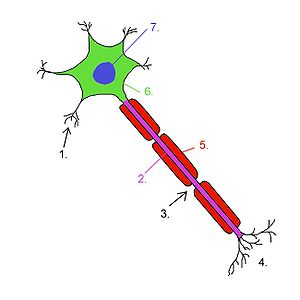
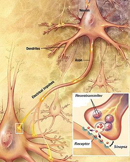

Nervni sistem reguliše ogroman broj procesa koji se dešavaju u organizmu. Odgovoran je za složene aktivnosti koje uključuju mišljenje i učenje: sviranje gitare, pisanje, vožnju automobila... Ovaj sistem obezbjeđuje i usaglašavanje sa spoljašnjom sredinom. Zahvaljujući nervnom sistemu, svi organi i organski sistemi su međusobno usklađeni i djeluju kao cjelina.
Nervni sistem sastoji se iz dva dijela: centralnog nervnog sistema i perifernog nervnog sistema. Centralni nervni sistem kontroliše sve životne funkcije, dok se perifernim prenose signali iz spoljašnje sredine, ili iz tijela, do centralnog nervnog sistema i obrnuto. Nosioci ovih aktivnosti nervnog sistema su nervne ćelije-neuroni.
Neuroni su ćelije specifičnog izgleda. To su najduže ćelije u tijelu. Sastoje se tijela ćelije, u kome je smješteno jedro i dvije vrste nastavaka. Kratki nastavci, koji podsjećaju na razgranato drvo, zove se dendriti. Dugački nastavak-neurit ili akson završava se manjim ograncima.
Aksoni su vrlo tanki i mogu biti duži od 1m, pa se nazivaju i nervna vlakna. Imaju mijelinski omotač koji im daje bijelu boju. Tijela nervnih ćelija i dendriti nemaju omotače, te imaju sivu boju. Neuroni su međusobno povezani. Veze između nervnih ćelija nazivaju se sinapse. Sinapsom se nazivaju i veze nervnih ćelija sa ćelijama mišićnog i žljezdanog tkiva.
Svi uticaji iz spoljašnje sredine koje naše tijelo može da registruje označeni su kao draži. Kada draž ima određenu jačinu i vrijeme djelovanja, u nervnoj ćeliji izazivaju promjenu koja se naziva nadražaj. Sposobnost nervne ćelije da nadražajem odgovara na draž naziva se nadražljivost. Najmanja jačina draži koja može da izazove nadražaj naziva se prag nadražaja. Kada nadražaj nestane, on se nervnim vlaknom prenosi do drugog neurona ili do nekog organa. Ovo svojstvo nervne ćelije naziva se provodljivost.
|  Neuron |
|
Kako nervne ćelije prenose informacije? Ćelijske membrane neurona su dvojno naelektrisane, sa spoljne strane pozitivno a sa unutrašnje negativno. Na mjestu djelovanja draži mijenja se naelektrisanje na membrani; ona postaje negativno naelektrisana na spoljašnjoj, a pozitivno naelektrisana na unutrašnjoj strani. Promjena naelektrisanja širi se duž membrane neurona velikom brzinom. Ova promjena naziva se nervni impuls ili nadražaj. Nadražaj se prenosi od dendrita, preko tijela nervne ćelije, do završetaka aksona. Da bi nervni impuls prešao na sljedeći neuron, neophodan je neurotransmiter. Ova hemijska supstanca nalazi se u završecima aksona. Nadolazeći nervni impuls izaziva oslobađanje neurotransmitera u prostor između dvije nervne ćelije. Na susjednoj ćeliji neurotransmiter izaziva promjenu naelektrisanja membrane-nervni impuls.
|  | Postoji preko 50 vrsta neurotransmitera, koji imaju zadatak da prenose nervne impulse |
Nervno vlakno sprovodi nervni impuls samo u jednom smjeru. Osjećajno nervno vlakno sprovodi nadražaj od periferije tijela i iz unutrašnjih organa prema mozgu i kičmenoj moždini. Pokretačko nervno vlakno sprovodi nadražaj iz mozga i iz kičmene moždine prema organima. Na primjer, ako dotaknemo rukom vrelu peglu, nervni impuls se preko osjećajnog vlakna prenosi do centralnog nervnog sistema, dok mozak pokretačkim vlaknom šalje "naredbu" da trgnemo ruku.
U mozgu i kičmenoj moždini postoje zone koje su izgrađene samo od tijela neurona i dendrita. To je siva masa nervnog sistema. Druge zone sadrže samo snopove nervnih vlakana; oni čine bijelu masu nervnog sistema.
Snopovi nervnih vlakana obavijenih tankom ovojnicom grade nerv ili živac. U zavisnosti od vrste nervnih vlakana koji ih grade nervi mogu biti: osjećajni, pokretački i mješoviti. Osjećajni nervi sadrže samo osjećajna nervna vlakna, pokretačke nerve izgrađuju samo pokretačka vlakna, dok mješoviti nervi sadrže obje vrste nervnih vlakana.